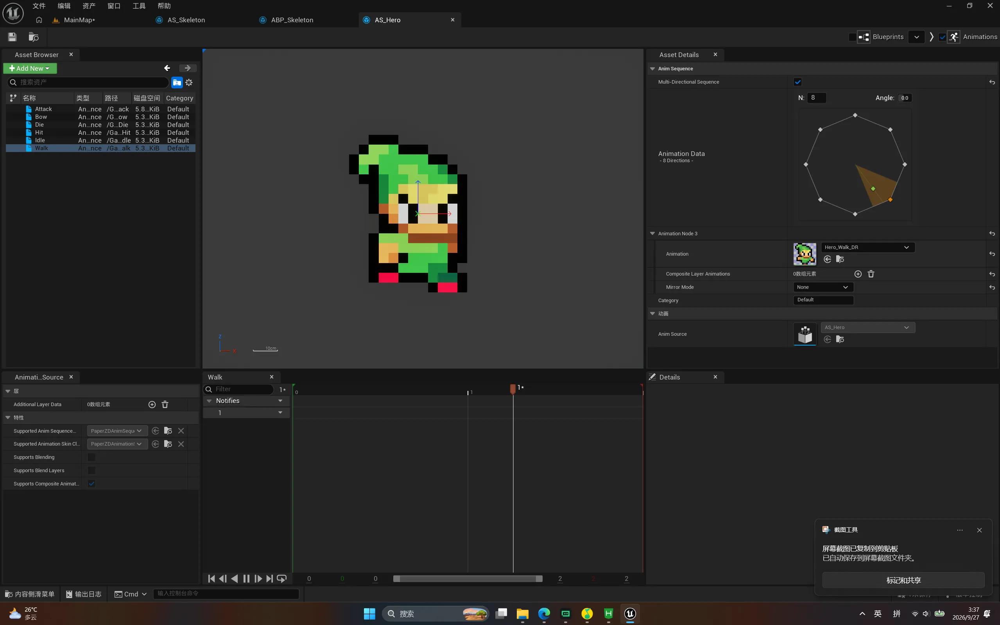
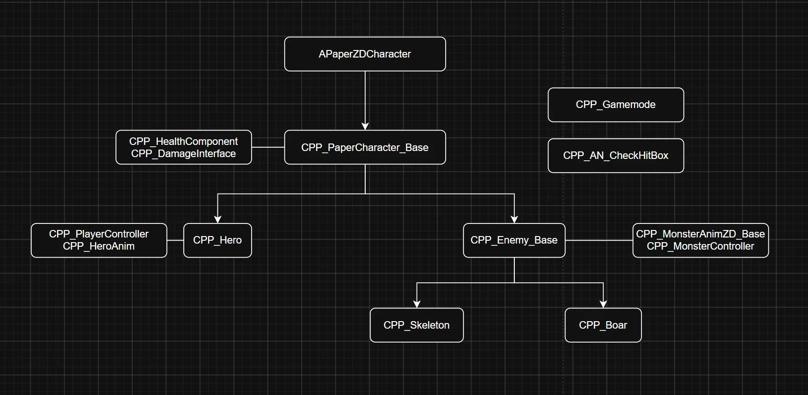
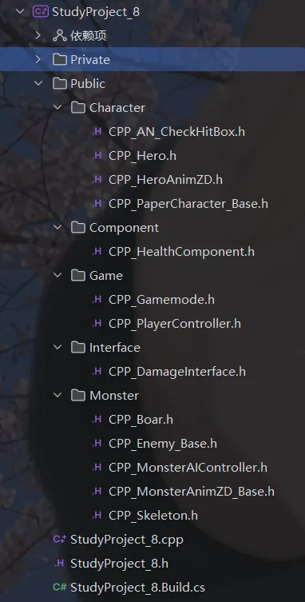
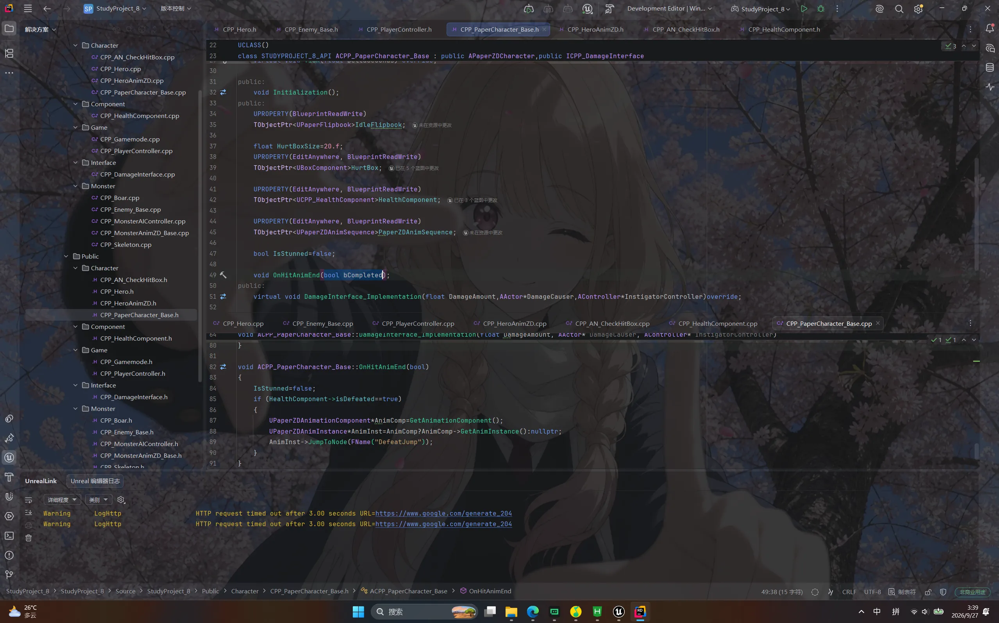
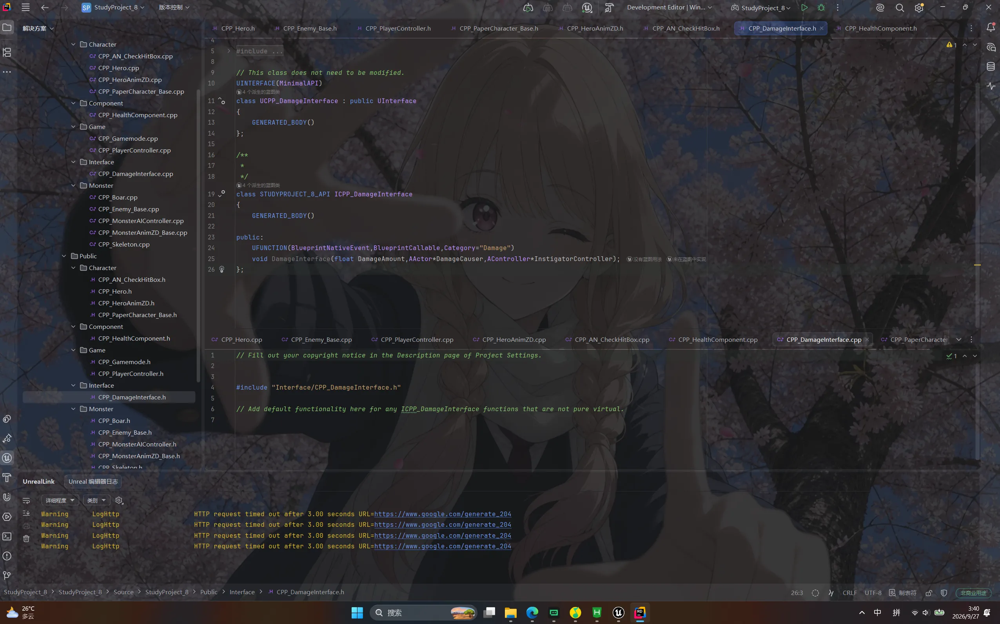
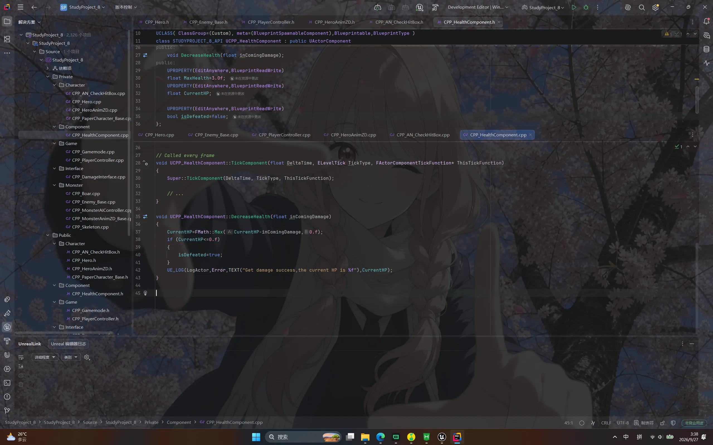
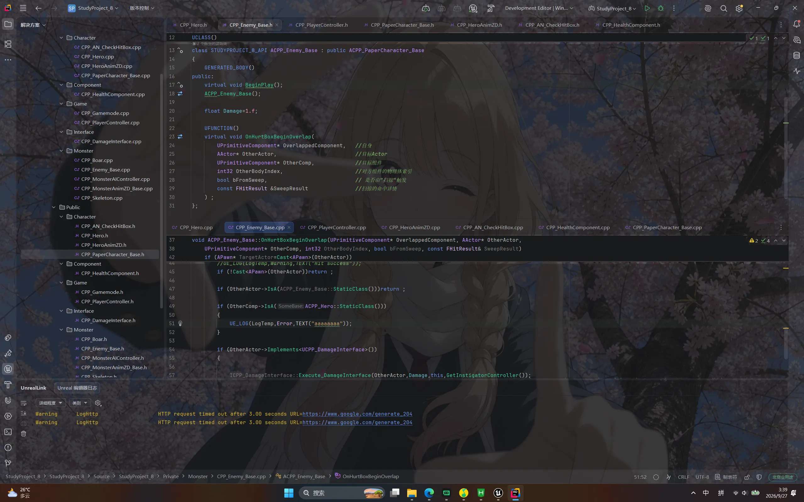
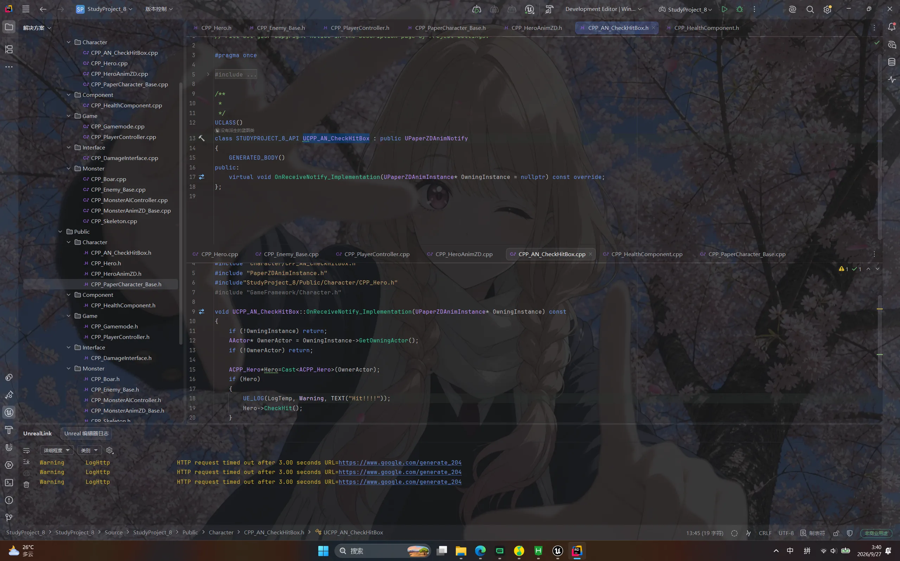

Case 08 / 08
地牢
上一个项目把引擎的 2D 流程摸了一遍，这个项目就接着往下走：既然画面能用瓦片和纸片精灵搭出来， 那么打架这件事也得自己从头写。规则很简单——一个持盾的骑士，两种怪物，互相能打。 这次动手之前先把类结构画了出来，代码按图写，算是补上了之前几个项目缺的那块「先想后写」。
概览与技术栈
这次的目标和上一个项目不太一样。上一个只想知道 2D 在 UE 里怎么搭起来，所以做出来的东西 能走能跳就够了；这个项目想要的是「打起来」——攻击有判定、挨打会掉血、血空了会倒下。 也正因为如此，动手第一件事不是打开编辑器，而是先在一张纸上把类的关系画清楚。
架构分两条线。竖着的带箭头的是继承链：最上面是 PaperZD 提供的角色基类， 往下抽出一个自己的角色基类，再往下分给英雄和敌人，敌人下面才是具体的骷髅和野猪。 这条线上的每个类只管自己那一层的差异，公共的部分——受击盒、血量组件、当前动画序列—— 全都放在角色基类里，这样加一种新怪物只需要写它跟别人不一样的地方。
横着的一条是能力。伤害这件事我没有做成一个「战斗管理器」，而是拆成了两个独立的东西： 一个血量组件，谁有血就挂谁身上；一个伤害接口，只声明「你可以对我造成这么多伤害」。 接口有三个参数，分别是伤害值、伤害来源和责任人，足够追溯一次攻击到底是谁打的。 这样拆开之后，攻击方不需要知道对面是英雄还是怪物，只要判断对方实现了这个接口， 把伤害递过去就行——后来加野猪的时候，攻击逻辑一行都没改。
攻击判定这一块花的时间最多。最开始的想法是在 Tick 里每帧检查一次距离， 但那样既不精确也不跟动画对齐。最后用的是 PaperZD 的动画通知： 写一个继承自动画通知的类，把它挂在攻击动画的某一帧上，动画播到那一帧才去问一句 「打到人了没有」。好处是判定和手感绑在一起——想让攻击来得早一点或晚一点， 只要在动画编辑器里挪一下通知的位置，代码完全不用动。
没做的部分也说清楚：地图是手刷的瓦片地图，没有随机生成；没有做 UI，血量目前靠动画表现和日志； 也没有存档。这三块是这个版本明确缺的东西，待后续开发。
技术栈
- 引擎
- Unreal Engine 5.7
- 语言
- C++：逻辑全部写在代码里，蓝图只作为资产存在（角色蓝图与动画蓝图）
- 代码组织
- 按角色、组件、游戏框架、接口、怪物五个目录分文件，类名统一 CPP_ 前缀
- 2D 表现
- Paper2D 的瓦片地图铺关卡，PaperZD 的动画源与动画序列驱动纸片精灵
- 角色体系
- PaperZD 角色基类派生出自制基类，再分出英雄与敌人，敌人下分骷髅和野猪
- 战斗
- 自定义伤害接口 + 受击盒重叠检测 + 血量组件，三段拼成一条完整的伤害链
- 攻击判定
- 继承 PaperZD 的动画通知，挂在攻击动画的指定帧上触发命中检查
- AI
- 怪物侧自己写了一个轻量的 AI 控制器，配合各自的动画类切换状态
截图与演示
先看关卡本身。地图是一张手刷的瓦片地图，拆成了两块分开管理； 场上站着三个纸片精灵，每个精灵外面套着的那圈椭圆就是它的碰撞范围，箭头是朝向—— 这个项目里几乎所有判定都建立在这两样东西上，调数值的时候基本整晚都在盯着这一屏。


技术文档
这个项目没有单独写文档，所以用七张图把代码讲一遍。顺序是照着写代码的顺序来的： 先看那张手画的类结构图，再看代码怎么按结构分目录，然后从角色基类开始， 沿着一次攻击往下走——伤害接口怎么定义、血量怎么扣、怪物怎么判定命中、动画通知在哪一帧触发。







导航链接
项目还在开发中，工程没有传到公开仓库，也没有打包发布，所以这里没有可以点的链接。 想看某个类的完整实现，或者想直接要工程文件，都可以写信跟我说。
- 代码仓库
- 暂无公开仓库
- 打包发布
- 暂未发布
- 源码说明
- 项目还在开发中